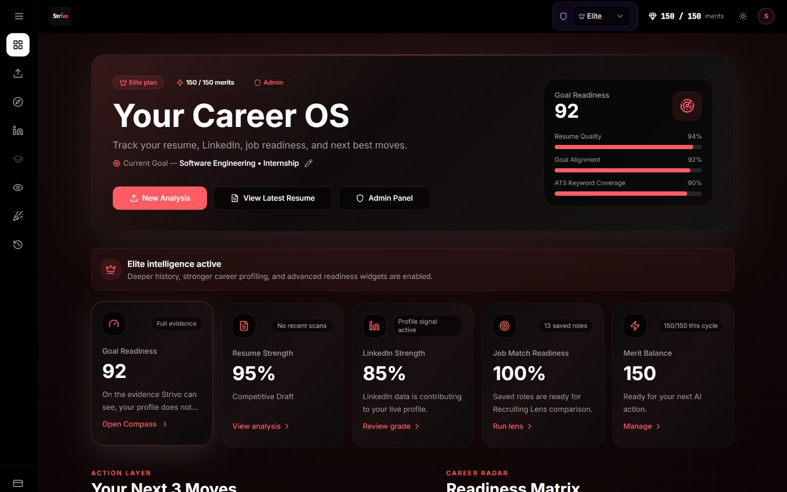

FEATURED
StrivoAI: Career Intelligence Platform
AI resume analysis and five career workflows, cut from ~110s to ~42s per analysis at under $0.10 each.
TypeScript · React · Supabase · PostgreSQL · Stripe